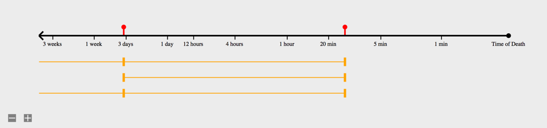

CDC Death Certificate Input Form
U.S. Standard Certificate of Death Form
Patient Name
Patient ID #
Patient DOB
Personal Information
Death Certification
Cause of Death
Manner of Death
Demographics
Personal Information
[Items 1-23] - Completed by Funeral Director
Death Certification
[Items 24-28] - Must be completed by person who pronounced or certifies death
Date Pronounced Dead:
Time Pronounced Dead:
License Number:
Date Signed (Mo/Day/Yr):
Actual or Presumed Date of Death (Mo/Day/Yr):
Actual or Presumed Time of Death:
Was Medical Examiner or Coroner Contacted?:
Yes
No
Was an Autopsy Performed?:
Yes
No
Were Autopsy Findings Available to Complete the Case of Death?:
Yes
No
Cause of Death
[Item 32] - Must be completed by person who pronounced or certifies death

Other Significant Conditions
Enter text here.
Cause of Death:
Onset to Death:
Manner of Death
[Items 33-50] - Completed by Medical Certifier
Demographics
[Items 51-55] - Completed by Funeral Director